Variables
&
opérateurs
Un monde passionnant et parfois complexe
Une variable c'est quoi ?

On peut tout mettre, t'es sur ?
Comment définir le nom d'une variable ?
La création d'une variable déclenche plusieurs opérations :
- Créer et mémoriser un nom de variable
- Lui attribué implicitement un type
- Créer et "mémoriser" une valeur
- Etablir un lien entre le nom de la variable et l'emplacement mémoire
Espace de nom
Lorsque nous créons une variable, nous réservons un emplacement mémoire dans l'ordinateur.
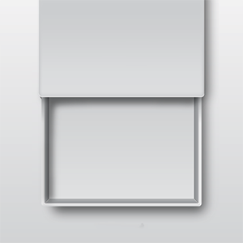Création d'une variable (référence)
Pour créer une variable, il faut lui donner un nom. Cette étape s'appelle la "Déclaration de variable".
Lui attribué un type
Le type de la variable dépend de son contenu.
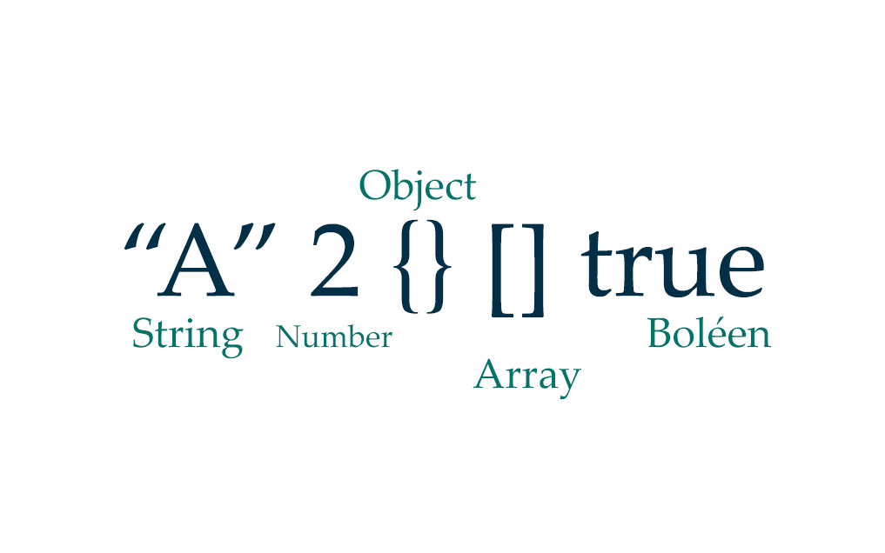Créer et mémoriser une valeur
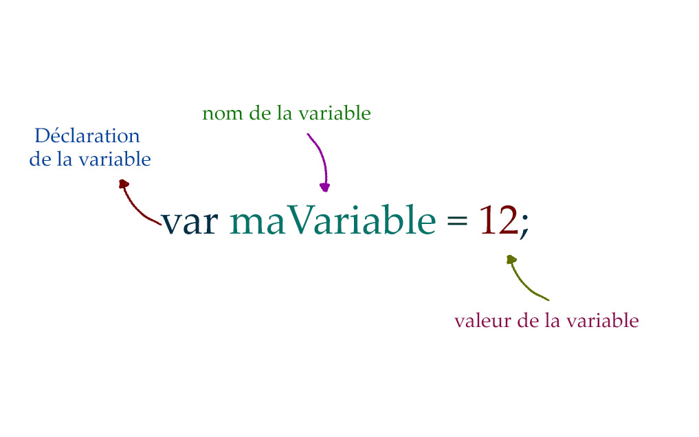Etablir un lien entre nom et valeur
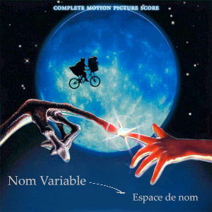Création de variable dans d'autres langages
En JAVA
float pi = 3.141f;
En C++
#include <iostream> using namespace std; int main() { int ageUtilisateur(16); return 0; }
Hello World !
En JAVA
/* Affichage console */ public class HelloWorld { public static void main(String[] args) { System.out.println("Hello world!"); } }
En JavaScript
alert("Hello world!");
Règles de nommage
- Un nom de variable est une séquence de lettres (a -> z ; A -> Z) et de chiffre (0 -> 9) ou underscore ( _ ).
- Le nom de la variable doit toujours commencer par une lettre minuscule (la majuscule peut être utilisée par convention pour les classes).
- Les lettres accentuées, les cédilles, les espaces, les caractères spéciaux, sont à éviter très fortement (exception pour le _underscore).
Convention de nommage
Il existe des conventions de nommage pour les variables. Deux d'entres-elles sont les plus connues et les plus utilisées.
- La première est le camelCase (casse de chameau)
- ma_variable (moins utiliser en JavaScript).
La casse
Les noms de variables sont sensibles à la casse.
- Age
- aGe
- AGE
Sont toutes des variables différentes !
La casse
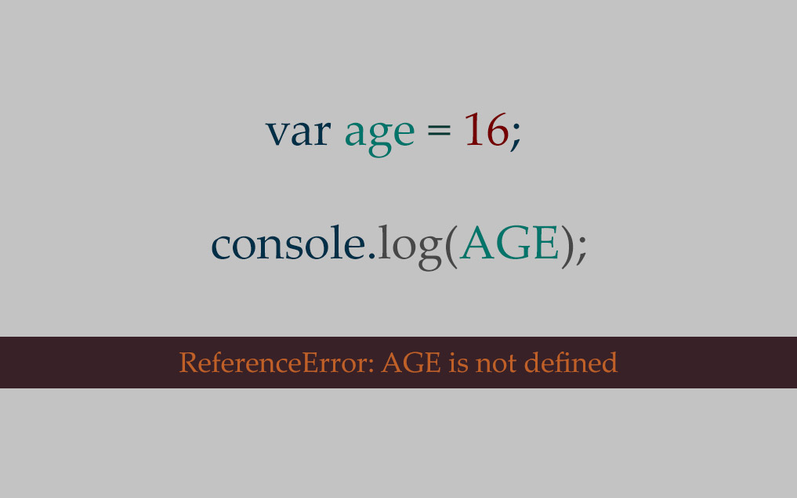Choisissez un nom de variable explicite !
Ne négligez pas le choix du nom de votre variable, c'est très important.
var nom; // C'est un bon nom de variable var x; // A éviter !!
Affectation multiple
Une des grandes forces des langages de programmation, c'est qu'il est possible d'affecter des valeurs à plusieurs variables en même temps
var voiture = "Ford", annee = 1969, permis = false;
Les noms de variable réservés
Il existe des mots réservés déjà utiliser par le langage, tachez de ne pas les utiliser.
Par exemple:
alert() // affiche une boite de dialogue à l'écran. Exemple : alert("Bonjour SimplonMars !"); // affiche Bonjour Simplon Mars !
Démonstration
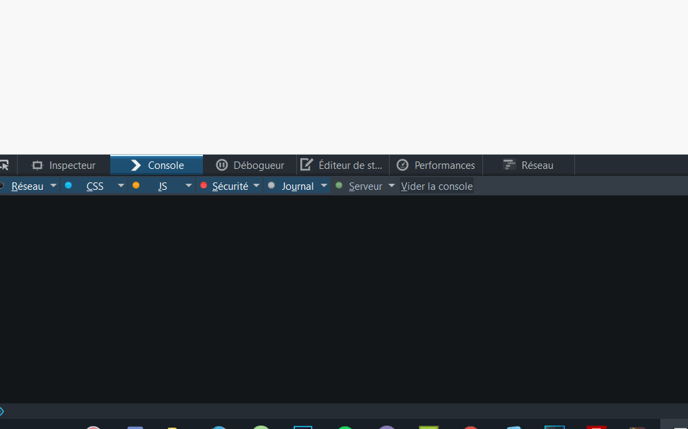Si maintenant je fais ceci :
alert = "lol"; // et que je fais : alert("Une autre boite de dialogue"); // J'aurai un message d'erreur.
Démonstration
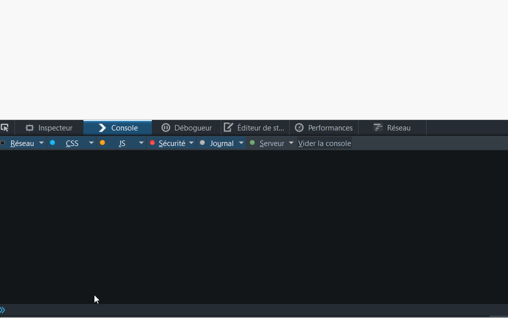Attribuer une valeur à la variable
Pour rester dans l'analogie de la boîte, on va devoir remplir la boite. Cette étape s'appelle l'affectation.
Comment affecter une valeur à une variable ?
Lorsque nous affectons une valeur à une variable, celle-ci aura ce qu'on appel un type. Le typage dépendra de son contenu.
Il existe plusieurs types :
- Le type numérique → stockage de nombre (0, 9, 3.5)
var nombre = 12; var nombreFlottant = 3.141;
var chaine = "Quand on est vivant on répond au téléphone !"
var ferie = true; var ecole = false;
Suivant le type de variable, on pourra faire certaines opérations.
// Par exemple, avec une variable de type numérique nous pouvons faire var resultat = 3 + 2 // ce qui donnera 5.
Concaténation avec le symbole +
var loulou = "Loulou' et 'Boutin (bando) Loulou' et 'Boutin" var coco = "Coco na Chanel (Coco) Coco na Chanel (Coco Chanel)" var complet = loulou + " " + coco
Démonstration
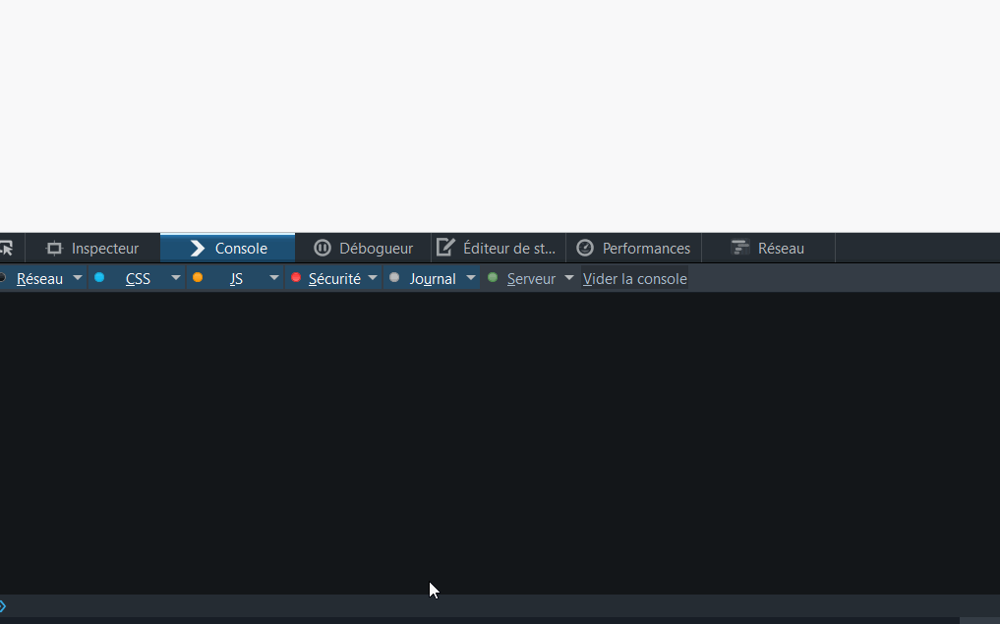Type de variable complexe
Une variable peut contenir des types de données complexe tel que des fonctions ou des tableaux.
// Par exemple var maFonction = function(){ // Faire quelque chose } var monTableau = [ ];
// On créer une variable btn qui va contenir l'ID #btn // De cette façon on économisera du code var btn = document.getElementById('btn'); btn.addEventListener('click', function(){ alert('Tu as cliqué avec JavaScript !'); }) // La même chose avec jQuery // noté qu'ici il n'y a pas besoin de variable $('#btn').on('click', function(){ alert('Tu as cliqué avec jQuery !') })
Confondre nom de variable et contenu
Une erreur qui arrive fréquemment lorsque l'on débute, c'est de confondre le nom de la variable et son contenu.
var boite = contenu; var nom ← "Simplon";
Le signe = en programmation n'est pas un signe d'égalité comme en mathématique, mais un signe d'affectation.
Opérateur et Opérande
Opérateur et Opérande
- Opérateurs d'affectation
- Opérateurs de comparaison
- Opérateurs arithmétiques
- Opérateurs binaires
- Opérateurs logiques
- Opérateurs de chaînes de caractères
- Opérateur conditionnel ternaire
- La virgule comme opérateur
- Opérateurs unaires
- Opérateurs relationnels
Opérateurs d'affectation
Affectation
x = y a = 2
Affectation après addition
x += y x = x + y a += 1 a = a + 1
Affectation après soustraction
x -= y x = x - y a -= 1 a = a - 1
Affectation après multiplication
x *= y x = x * y a *= 2 a = a * 2
Affectation après division
x /= y x = x / y a /= 2 a = a / 2
Affectation du reste
x %= y x = x % y a %= 5 a = a % 5
Affectation après exponentiation
x **= y x = x ** y a **= 2 a = a **2
Opérateurs de comparaison
Les opérateurs d'égalité
Égalité simple (==)
x == y 1 == 1; // true "1" == 1; // true 1 == '1'; // true 0 == false; // true 0 == null; // false 0 == undefined // false null == undefined // true
Inégalité simple (!=)
x != y 1 != 2; // true 1 != "1"; // false 1 != '1'; // false 1 != true; // false 0 != false; // false
Égalité stricte (===)
x === y 3 === 3 // true 3 === '3' // false
Inégalité stricte (!==)
x !== y 3 !== '3' // true 4 !== 3 // true
Opérateurs relationnels
Opérateurs relationnels
Supérieur strict (>)
x > y 4 > 3; // true
Supérieur ou égal (>=)
x >= y 4 >= 3; // true 3 >= 3; // true
Inférieur strict (<)
x < y 3 < 4; // true
Inférieur ou égal (<=)
x <= y 3 <= 4; // true
Opérateurs arithmétiques
Opérateurs arithmétiques
Addition (+)
x + y concaténation "toto" + false // "totofalse" // chaîne de caractères + chaîne de caractères -> concaténation "toto" + "truc" // "tototruc"
Soustraction (-)
x - y 5 - 3 // 2 3 - 5 // -2 "toto" - 3 // NaN
Division (/)
Opérateur : x / y 1 / 2 // renvoie 0.5 en JavaScript 1 / 2 // renvoie 0 en Java // (aucun des deux opérandes n'est un nombre flottant de façon explicite) 1.0 / 2.0 // renvoie 0.5 en JavaScript et Java 2.0 / 0 // renvoie Infinity (pour l'infini) en JavaScript 2.0 / 0.0 // renvoie Infinity également 2.0 / -0.0 // renvoie -Infinity en JavaScript
Multiplication (*)
x * y 2 * 2 // 4 -2 * 2 // -4 Infinity * 0 // NaN Infinity * Infinity // Infinity "toto" * 2 // NaN
Reste (%)
var1 % var2 12 % 5 // 2 -1 % 2 // -1 NaN % 2 // NaN 1 % 2 // 1 2 % 3 // 2 -4 % 2 // -0 5.5 % 2 // 1.5
Incrément (++)
x++ ou ++x // Suffixe var x = 3; y = x++; // y = 3, x = 4 // Préfixe var a = 2; b = ++a; // a = 3, b = 3
Décrément (--)
x-- ou --x // Suffixe var x = 3; y = x--; // y = 3, x = 2 // Préfixe var a = 2; b = --a; // a = 1, b = 1
Négation unaire (-)
-x var x = 3; y = -x; // y = -3, x = 3
Plus unaire (+)
+x +3 // 3 +"3" // 3 +true // 1 +false // 0 +null // 0
Opérateurs binaires
Opérateurs binaires
& (ET binaire)
| a | b | a & b |
| 0 | 0 | 0 |
| 0 | 1 | 0 |
| 1 | 0 | 0 |
| 1 | 1 | 1 |
| (OU binaire)
| a | b | a OU b |
| 0 | 0 | 0 |
| 0 | 1 | 1 |
| 1 | 0 | 1 |
| 1 | 1 | 1 |
Opérateurs logiques
Opérateurs logiques
ET logique (&&)
a1 = true && true // t && t renvoie true a2 = true && false // t && f renvoie false a3 = false && true // f && t renvoie false a4 = false && (3 == 4) // f && f renvoie false a5 = "Yip" && "Yop" // t && t renvoie "Yop" a6 = false && "Yop" // f && t renvoie false a7 = "Yop" && false // t && f renvoie false
OU logique (||)
o1 = true || true // t || t renvoie true o2 = false || true // f || t renvoie true o3 = true || false // t || f renvoie true o4 = false || (3 == 4) // f || f renvoie false o5 = "Yip" || "Yop" // t || t renvoie "Yip" o6 = false || "Yip" // f || t renvoie "Yip" o7 = "Yip" || false // t || f renvoie "Yip"
NON logique(!)
n1 = !true // !t renvoie false n2 = !false // !f renvoie true n3 = !"Yop" // !t renvoie false
Opérateurs de chaînes de caractères
Opérateurs de chaînes de caractères
console.log("ma " + "chaîne"); // affichera "ma chaîne" dans la console var maChaîne = "alpha"; maChaîne += "bet"; // l'expression sera évaluée en "alphabet" // et cette valeur sera affectée à maChaîne
Opérateur conditionnel ternaire
Opérateur conditionnel ternaire
condition ? val1 : val2 var statut = (âge >= 18) ? "adulte" : "mineur";
La virgule comme opérateur
La virgule comme opérateur
for (var i = 0, j = 9; i <= j; i++, j--)
Opérateurs unaires
Opérateurs unaires
var arbres = new Array("sequoia", "laurier", "cèdre", "chêne", "érable"); delete arbres[3]; if (3 in arbres) { // Ceci ne sera pas exécuté }
typeof opérande typeof (opérande)
Opérateurs relationnels
Opérateurs relationnels
nomOuNumeroPropriete in monObjet "fabricant" in maVoiture; // renvoie true "modèle" in maVoiture; // renvoie true
ECMAScript 6 (2015) et les variables
La nouvelle version de JavaScript a apporté sont lot de déclarations de variable
Déclarer une variable avec const
function fn() { const foo = "bar" if (true) { const foo // SyntaxError, la variable a besoin d'être assignée const foo = "qux" foo = "norf" // SyntaxError, la variable ne peut pas être réassignée console.log(foo) // "qux", la variable appartient au scope de son bloc (le "if") } console.log(foo) // "bar", la variable appartient au scope de la fonction "fn" }source du code : putaindecode.io
Déclarer une variable avec const
Portée de const
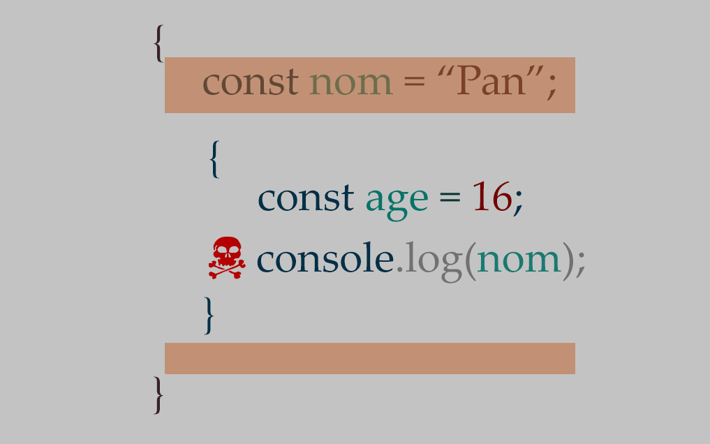Portée de const
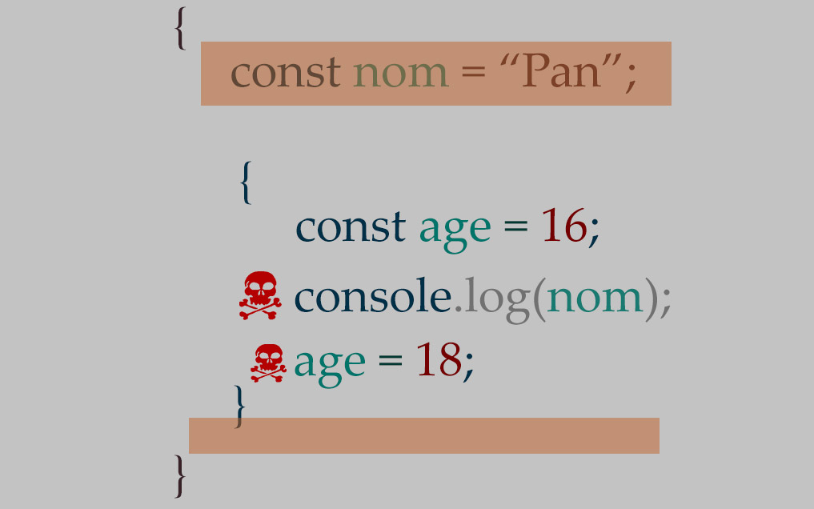let moi faire...
Déclarer sa variable avec let
function fn() { let foo = "bar" var foo2 = "bar" if (true) { let foo // pas d'erreur, foo === undefined var foo2 // Attention, les déclarations "var" ne sont pas scopées // au niveau bloc // foo2 est en réalité écrasé ! foo = "qux" foo2 = "qux" console.log(foo) // "qux", la variable appartient au scope de son blocs (le "if") console.log(foo2) // "qux" } console.log(foo) // "bar", la variable appartient au scope de son bloc // (la fonction "fn") console.log(foo2) // "qux" }
Portée de let
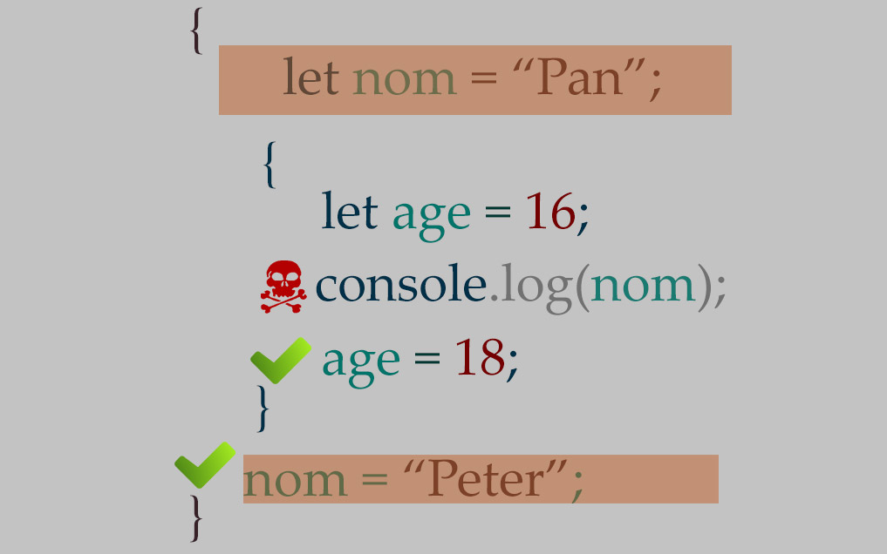UFC-Que choisir ?
On pourrait croire que le choix est difficile, que neni
- Utilisez une déclaration par const (99% du temps, c’est le bon choix)
- Si au fil de votre code vous changez sa valeur, modifiez pour un let (1%)
- Si vous avez trouvé le pire cas d’utilisation du monde, changez pour un var (je vous laisse faire le calcul)
Sources :
- Apprendre à programmer avec Python 3 - de Gérard Swinnen
- Algorithmique et programmation pour non-matheux - de Christophe Darmangeat
- MDN JavaScript - de Mozilla
- Calendrier de l'avent 2015 - putaindecode.io
Merci à Guillaume Denis pour sa relecture et sa correction